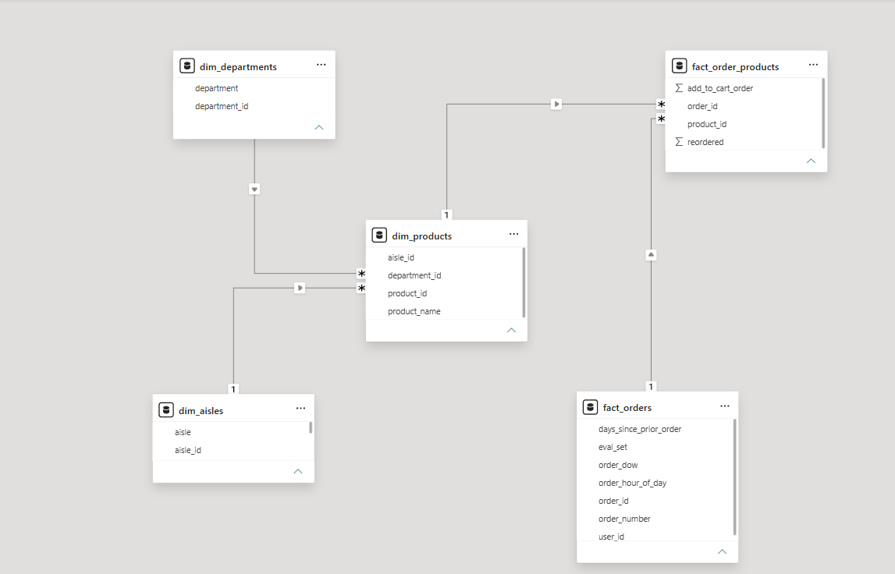
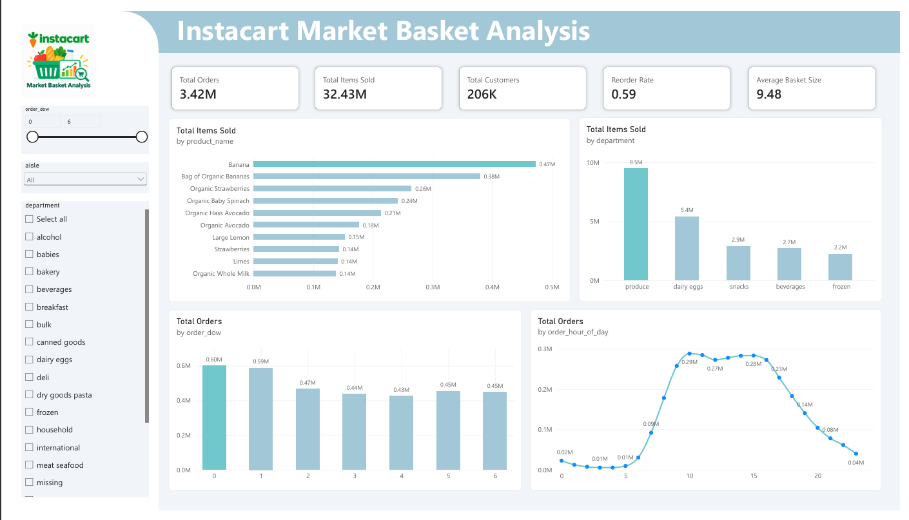

Menganalisis 3,42 juta data pesanan grocery Instacart untuk memahami pola belanja pelanggan, dari infrastruktur data hingga dashboard bisnis yang siap dipakai.
Proyek ini membangun alur data end-to-end untuk data grocery Instacart: mulai dari infrastruktur database di Docker, pembersihan dan transformasi data dengan Python dan SQL, hingga dashboard interaktif di Power BI yang menjawab pertanyaan seputar perilaku belanja, produk terlaris, dan waktu transaksi tersibuk.
Data transaksi digabungkan dengan master produk hingga level departemen agar tren harian dan reorder rate bisa dihitung secara akurat.

Model data: fact_orders & fact_order_products terhubung ke dim_products, yang terhubung ke dim_departments dan dim_aisles.
| Tabel | Isi |
|---|---|
| fact_orders / fact_order_products |
Data transaksi pesanan: order_id, user_id, hari & jam order, product_id, status reorder. |
| dim_products | Master data produk: product_id, product_name, aisle_id, department_id. |
| dim_departments / dim_aisles |
Katalog kategori makro (departemen) dan sub-kategori (lorong/aisle) produk. |
Total Orders
Total Items Sold
Total Customers
Reorder Rate
Avg Basket Size

Dashboard Power BI: produk terlaris, volume per departemen, pola hari, dan jam sibuk transaksi.
Reorder rate 59% dengan rata-rata 9-10 item per keranjang menunjukkan kebiasaan belanja stok mingguan.
Banana, Organic Strawberries, dan Organic Baby Spinach jadi produk paling laris.
Departemen Produce menyumbang volume hampir 2x lipat dari Dairy & Eggs.
Volume pesanan tertinggi terjadi di awal minggu, lalu menurun stabil di hari kerja.
Transaksi memuncak pukul 10:00-16:00, mencerminkan belanja siang agar pesanan tiba sebelum waktu memasak.